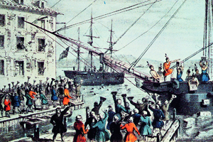
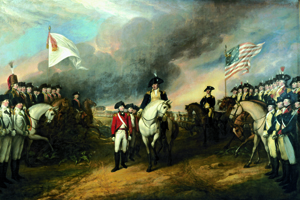
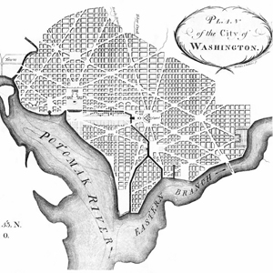

Lezione 14  Stati Uniti
Stati Uniti
-
275
470
-
310
415
-
310
485
-
275
505
-
275
435
-
340
435
-
310
455

BOSTON
Il Boston tea Party, cioè la sollevazione di alcuni coloni americani che distruggono un carico di tè nel porto di Boston, è l’episodio che dà inizio alla guerra di Indipendenza: ne vediamo una interpretazione ottocentesca degli incisori Currier e Ives.
YORKTOWN
Dopo la battaglia di Yorktown del 1781 il generale George Washington accetta la resa delle truppe inglesi: l’episodio decisivo della guerra di indipendenza viene raffigurato dal pittore John Trunbull a quarant’anni di distanza dall’evento.
WASHINGTON
L’urbanistica della capitale degli Stati Uniti, Wasshigton D. C., viene progettata nel 1790 dall’architetto di origine francese Pierre-Charles L’Enfant, che si ispira alle piante delle più importanti metropoli europee.BOSTON
Le tredici colonie americane entrano in conflitto con la madre patria rivendicando l’autonomia. I coloni organizzano manifestazioni e boicottano le merci inglesi con azioni come il Boston Tea Party.MARYLAND
1775: Le colonie danno vita a un esercito indipendente, ne affidano il comando a George Washington e aprono quella che verrà chiamata la guerra d’indipendenza americana. Nel 1777, con la vittoria americana a Saratoga, l’esercito delle colonie, guidato da Washington, ribalta le sorti del conflitto contro gli inglesi.PHILADELPHIA
4 Luglio 1776: Dichiarazione d’Indipendenza: si costituiscono gli Stati Uniti d’America. Quella che stenderanno gli Stati Uniti sarà la prima costituzione della storia. Nasce lo stato di diritto. Gli Stati Uniti vengono formalmente riconosciuti solo nel 1783, durante i negoziati di pace, tenuti nella reggia di Versailles. In questa occasione, infatti, la Gran Bretagna riconosce piena indipendenza alle sue ex colonie.WASHINGTON
Con la redazione della Costituzione federale nel 1787 gli Stati Uniti adottano il federalismo. Nel 1789 approvano la Carta dei Diritti, i primi emendamenti alla Costituzione, che sanciscono i diritti e le libertà dell’individuo. Tuttavia ne sono esclusi i neri, considerati stranieri, e ridotti in la schiavitù (nel 1789 il fenomeno interessa 700.000 persone).